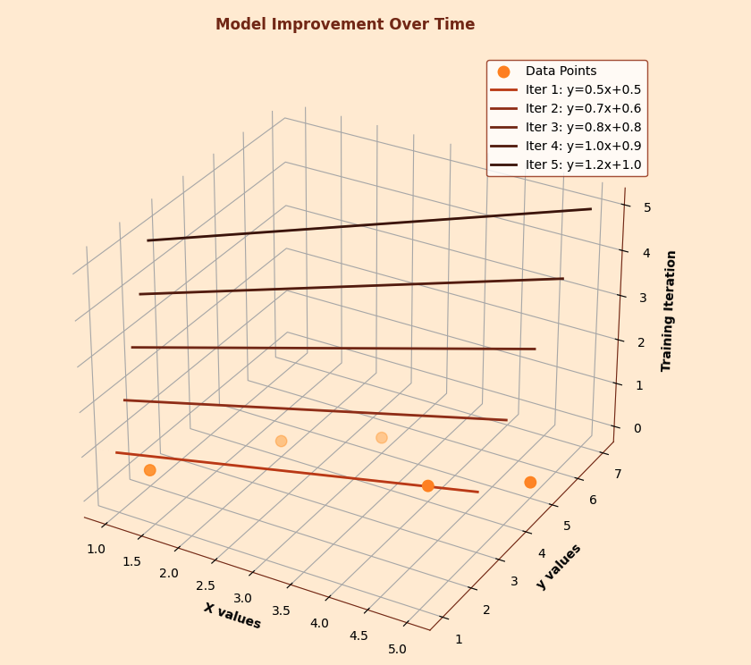
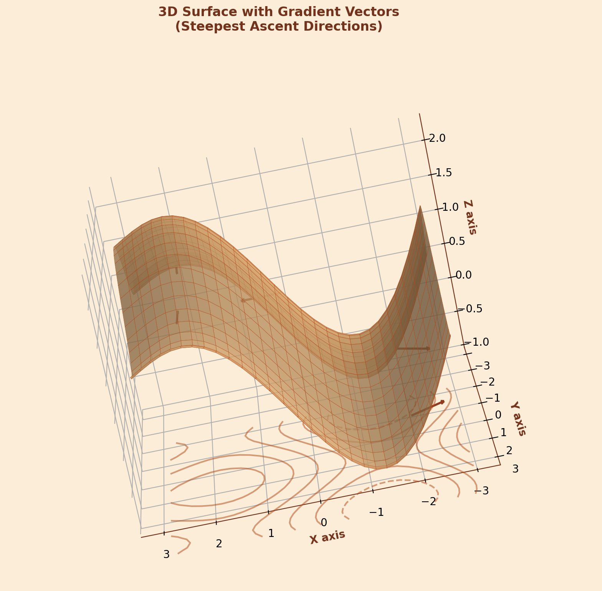
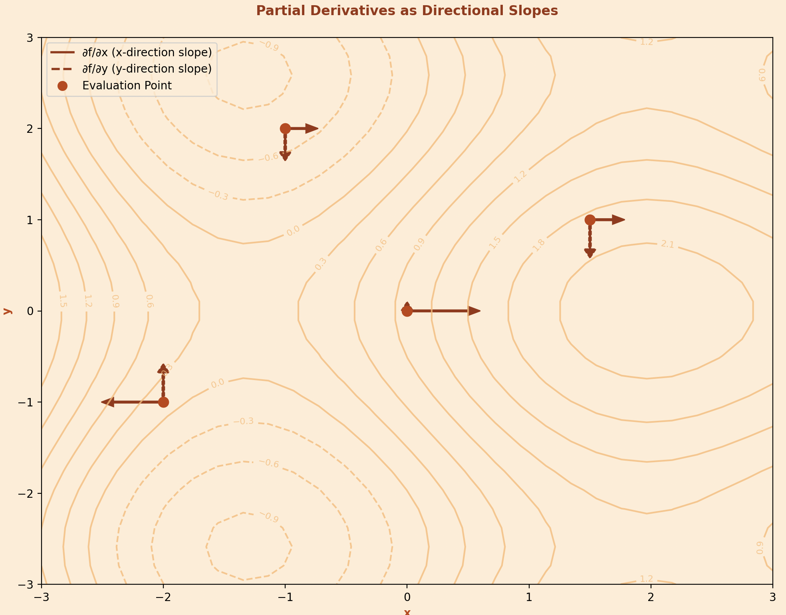

From the simplest linear regression to the most complex neural networks, this concept serves as the backbone of how machines learn from data. But what exactly drives this learning process, and how do algorithms automatically improve their predictions?
To answer this question, we must first understand the concept of gradients. In mathematics, a gradient represents the direction and rate of steepest increase of a function.
In machine learning, we work with functions that have multiple variables - often thousands or millions of them. These functions typically represent the "loss" or "error" of our model. The gradient of such a function tells us how changing each variable would affect the overall error. It's a vector that points in the direction of steepest increase, with each component representing the rate of change with respect to one specific variable.
Mathematically, for a function \(f(x_1, x_2, x_3, ..., x_n)\) \[\nabla f = \left( \frac{\partial f}{\partial x_1}, \frac{\partial f}{\partial x_2}, \ldots, \frac{\partial f}{\partial x_n} \right)\]
But what exactly are these partial derivatives that make up the gradient, and why are they so crucial for optimization?
Partial derivatives are the fundamental components of gradients. When we have a function that depends on multiple variables, a partial derivative tells us how the function changes when we modify just one variable while keeping all others constant.
Lets take a simple example : Like we have a function \(f(x,y) = x^2 + 2xy + y^2\). The partial derivative with respect to \(x\) is \( \frac{\partial f}{\partial x} = 2x + 2y \) which tells us how \( f \) changes as we increase \( x \) while keeping \( y \) fixed. Similarly, \(\frac{\partial f}{\partial y} = 2x + 2y\) tells us how \(f\) changes as we modify \(y\) while keeping \(x\) constant.
In machine learning, these partial derivatives have a direct interpretation. If our function represents the error of a model, then the partial derivative with respect to a particular parameter tells us how much the error would increase or decrease if we slightly adjusted that parameter. This information is invaluable because it guides us toward parameter values that minimize error.
PDE's are mainly used for their computational efficiency. Using techniques like backpropagation in neural networks, we can compute these derivatives for millions of parameters simultaneously. But knowing the direction of steepest increase is only half the knowledge .... how do we use this information to actually minimize our loss function?
Here's where gradient descent comes into play. Since gradients point in the direction of steepest increase, we can minimize a function by moving in the opposite direction, the direction of steepest decrease. This is the fundamental insight behind gradient descent.
the algorithm is simple
Mathematically, the update rule is \(\theta = \theta - \alpha \nabla
J(\theta) \)
Where \(\theta\) represents our parameters, \(\alpha\) is the learning
rate (step size), and \(\nabla J(\theta)\) is the gradient of our loss
function J.
The learning rate \(\alpha\) is crucial too large, and we might overshoot the minimum; too small and convergence will be painfully slow. Its like determining how big steps you take while walking down when mom came from market. But how exactly does this abstract concept apply to real machine learning problems?
Let's see how gradient descent works in linear regression, one of the simplest yet most important machine learning algorithms. In linear regression, we're trying to find the best line (or hyperplane) that fits our data.
For a simple case with one feature, our model is: \[ \hat{y} = \theta_0 + \theta_1 x \] Our loss function is typically the Mean Squared Error (MSE): \[ J(\theta_0, \theta_1) = \frac{1}{2m} \sum_{i=1}^m (\hat{y}_i - y_i)^2 \] To minimize this loss, we need the partial derivatives: \[ \frac{\partial J}{\partial \theta_0} = \frac{1}{m} \sum_{i=1}^m (\hat{y}_i - y_i) \] \[ \frac{\partial J}{\partial \theta_1} = \frac{1}{m} \sum_{i=1}^m (\hat{y}_i - y_i) x_i \]
These derivatives tell us how to adjust our parameters. If the partial derivative with respect to θ₁ is positive, it means increasing θ₁ would increase our error, so we should decrease it. The gradient descent algorithm automatically makes these adjustments, iteratively improving our model's fit to the data.
This is all from myside on Gradients. Hope I was able to add few value to your today's learning :)